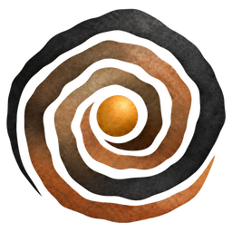

Search, the way it should be.
Find anything on your PC by its name, the words inside it, the text in an image, what a photo shows, or what's said in a recording
Press Alt + S on Windows 11. Apps and files on every drive, the words inside your documents, the text in your images, what your photos and videos show and what's said in your recordings, within milliseconds and all on your PC.
Free and open source (MIT) · Windows 11, 64-bit · about 50 MB, models download as you choose them
One popup
Everything on your PC, in one list
Each keystroke is answered from the places you use, then filled in with names from every drive and with what's inside your files, images, videos and recordings, all ranked together.
Measured, not promised
Bedrock and Everything, side by side
On an everyday laptop (Intel Core i9-13900HX, 32 GB, RTX 4080 Laptop) with 9,453,012 files and folders on two drives, Bedrock, Excavate's own index, against Everything 1.4 with its owner's settings. Version 0.1.0, November 2026.
| Names | Bedrock | Everything | Compared |
|---|---|---|---|
| Typical search, first 100 results (median of 44 kinds) | 7.0 ms | 27.5 ms | |
| A new file found | 6.2 ms | 926 ms | |
| Opening at start | 0.067 s | 2.1 s | |
| Building from the drives' own tables | 10.1 s | 27.9 s | |
| Memory | 87.5 MB | 800 MB | |
| Processor time when idle, per minute | 0.69 s | 0.14 s |
Bedrock is faster on 33 of the 44 searches. Everything is a few milliseconds faster on searches by date or size and on those with hundreds of thousands of results, and lighter when idle.
| Finding by what's inside (Balanced) | Data | First | Top ten |
|---|---|---|---|
| Documents, by words inside | GovDocs1, 3,000 files | 67% | 90% |
| Photos, by a description | COCO 2017, 300 photos | 81% | 99% |
| Videos, by a description | MSR-VTT, 150 clips | 68% | 91% |
| Recordings, by what's said (English) | LibriSpeech, 50 recordings | 93% | 93% |
| Recordings, other languages | FLEURS Arabic, German, English | 98% | 98% |
Public datasets, so anyone can check. Every figure, the method and the raw results are in the benchmarks, with a clean 4-core virtual machine to confirm them.
Private by design
Nothing leaves your PC
Every model runs on your own processor or graphics card, with no account and nothing uploaded. Excavate goes online only to download the models you choose and, if you let it, to check for updates.
Secrets stay hidden
Passwords, codes, keys, card numbers, IBANs and IDs are blurred in previews and never stored. Images stay blurred until they've been read.
Found and hidden, shown to you
Settings lists what was found by kind. After Windows Hello you can see where each one is, with the secret outlined in place.
Signed updates
Each release is signed, and Excavate checks the signature before it uses an update. What stays on your PC
Requirements
Runs on the PC you have
| Minimum | Recommended | |
|---|---|---|
| Windows | 11, 64-bit | 11, up to date |
| Processor | 4 cores | 8 cores or more |
| Memory | 8 GB | 16 GB |
| Graphics card | none needed | 8 GB, a current driver |
| Disk | 1 GB plus the index | 15 GB, for every model |
Names, documents, and Quick or Balanced reading run on the processor. Thorough and the Balanced and Thorough image search use the graphics card.
Install
Ready in a minute
The setup from Releases, one file.
It installs for you alone, without administrator rights, and adds itself to the Start menu.
The shortcut, how names are found, which folders to read and how closely (Quick, Balanced or Thorough), with how long each takes on your PC.